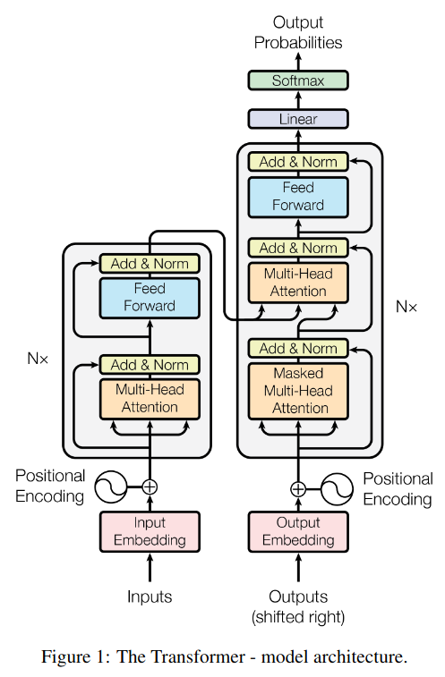
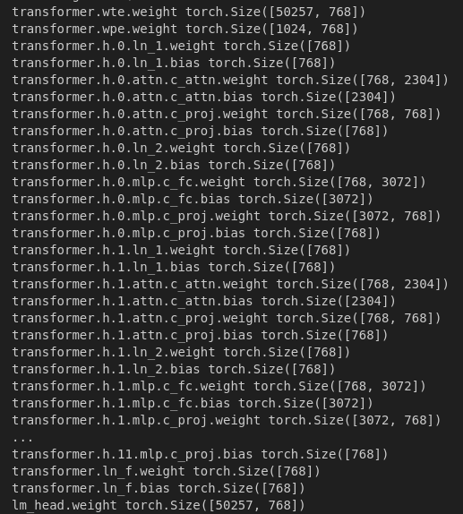
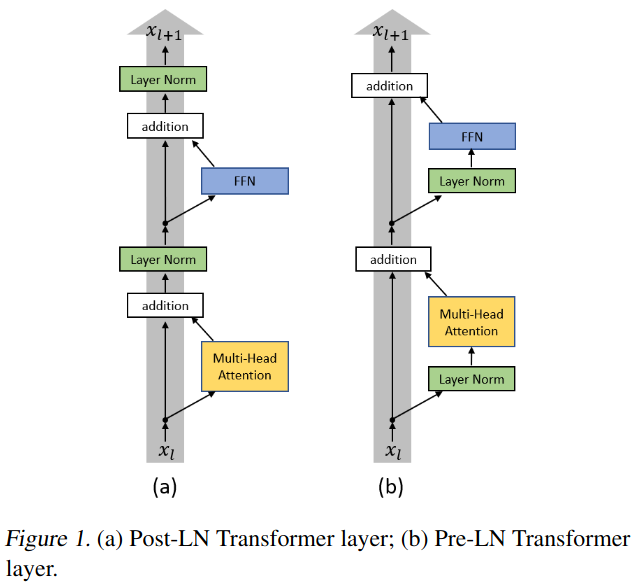
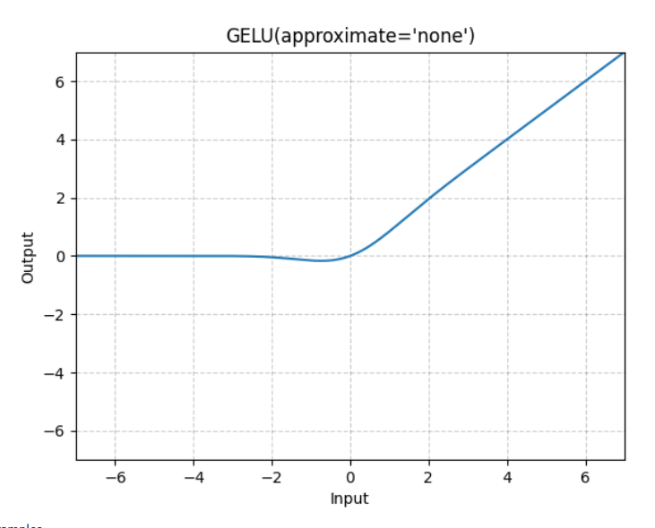
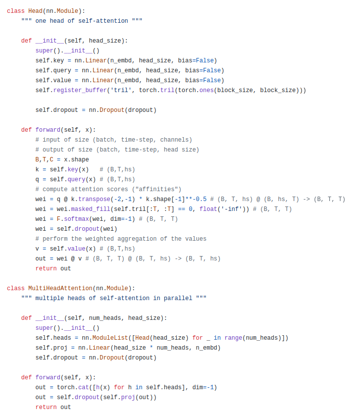

from dataclasses import dataclass
import math
import torch
import torch.nn as nn
from torch.nn import functional as F- The following project/write-up arises from my interest in understanding the under-the-hood details of training transformers. I’ve studied Andrej Karphaty’s video “Let’s build GPT: from scratch, in code, spelled out.” when it came out in 2023, and started working on describing parts he didn’t yet explain. Then “Let’s reproduce GPT-2 (124M)” came out, which answered a lot of my questions and compelled me to finish up the write up and make it available to others. My hope is that it will serve as a good review to those studying Andrej’s work, or those who do not have time to carefully work through a 4H+ video (which is highly, highly recommended).
- Part 1 focuses on building the transformer, Part 2 on optimizing it, and in the parts that follow, I hope to describe my own tokenization and training experiments.
Overall tranformer structure
- We’ll be implementing the right hand side (the decoder) that composes GPT-2: each unit on the right will be a block in our transformer.

- The configuration below is the configuration for the entire tranformer, with each layer h pertaining to one of the blocks. We want to replicate the following structure from a GPT-2 model in Huggingface Transformers:

- The code below is the skeleton on GPT2 config and main module that will allow us to replicate that structure:
@dataclass
class GPTConfig:
block_size: int = 256
vocab_size: int = 65
n_layer: int = 6
n_head: int = 8
n_embd: int = 384
class GPT(nn.Module):
def __init__(self,config):
super().__init__()
self.config = config
# With nn.ModuleDict() index into submodules just like a dictionary
self.tranformer = nn.ModuleDict(dict(
wte = nn.Embedding(config.vocab_size, config.n_embd),
wpe = nn.Embedding(config.block_size, config.n_embd),
h = nn.ModuleList([Block(config) for _ in range(config.n_layer)]),
ln_f = nn.LayerNorm(config.n_embd)
)
)
self.lm_head = nn.Linear(config.n_embd, config.vocab_size, bias=False)nn.ModuleDict allows you to index into submodules using keys, just like a dictionary.
nn.ModuleList allows us to index into each individual layer using an index, just like with a list
Transformer Block
Now let’s implement the Block,…
Unlike the original GPT2 paper, establish a clean residual pathway by taking the layer norm of x and applying attention/multilayer perceptron layer to it then adding it to the input x. Since addition allows for an adulterated gradient flow during backpropagation, this pre-layer norm configuration is the better than the post-layer norm configuration where the norm is applied after the addition. More formally, Xiong et al. (2020) have shown that if post-layer norm is used, a warm-up stage is needed to avoid training instability whereas if pre-layer norm is used, the gradients are well-behaved at initialization. See the difference between original (Post-LN) GPT-2 implementation and the ‘corrected’ pre-LN implementation used here:

- Finally, onto the Block:
class Block(nn.Module):
def __init__(self,config):
super().__init__()
self.config = config
self.ln_1 = nn.LayerNorm(config.n_embd)
self.attn = CausalSelfAttention(config)
self.ln_2 = nn.LayerNorm(config.n_embd)
self.mlp = MLP(config)
def forward(self, x):
x = x + self.attn(self.ln_1(x))
x = x + self.mlp(self.ln_2(x))
return xNote again how the layer norm is applied before the addition to the residual stream.
Andrej notes that attention is a communication operation, where tokens communicate with each other and aggregate information. Thus attention can be thought of as a pooling function/weighted sum function/reduce operation. On the other hand, the multilayer perceptron (MLP) is applied to each token individually, with no information exchanged between the tokens. Thus attention is a reduce and MLP is the map operation and a transformer is a repeated application of MapReduce.
Multilayer Perceptron
- Briefly summarizing from Andrej’s previous video (Let’s build GPT: from scratch, in code, spelled out.), multilayer perceptron is implemented using a standard “bottleneck architecture” where the dimensions are first expanded to learn more complex representations, nonlinearity is applied to help the model learn more complex patterns, and finally the data is projected down again to keep the computational complexity in check.
class MLP(nn.Module):
def __init__(self,config):
super().__init__()
self.c_fc = nn.Linear(config.n_embd, config.n_embd*4)
self.gelu = nn.GELU(approximate='tanh')
self.c_proj = nn.Linear(config.n_embd*4, config.n_embd)
def forward(self,x):
x = self.c_fc(x)
x = self.gelu(x)
x = self.c_proj(x)
return x - GPT-2 used an approximate version of GeLU because at the time of GPT-2’s creation, the erf function was very slow in TensorFlow and GPT-2 and the approximate version was used. Today there’s no reason to use the approximate version but Andrej is using the tanh approximation for veracity.
- Also, GeLU is better than ReLU due to dead neuron problem since a local gradient is always present as seen below:

Causal Self Attention
- Andrej’s attention implementation is a more efficient implementation of the following simple one from “Lets build GPT: from scratch, in code, spelled out”:

- Notice how in the implemenation above it is clear that the heads are parallel streams whose outputs are concatenated.
- The idea of the more efficient implementation is to make another batch dimension with nh so that PyTorch effectively makes batches of dimension (B,nh) and applies all the operations on both B and nh in parallel.
- Each token emits query, key, and value. Queries and keys first multiply each other to deterimine “how interesting they find each other”.
- Next, we apply an autoregressive mask to make sure the tokens only attend to tokens before them.
- The softmax normalizes the attention so it sums to 1.
- The matrix multiply of attention with the values is a way, at every single token, to do a weigthed sum of the tokens each token finds intersting.
- Transpose, contiguous, and view reassembles everything in memory and performs what is equivalent of a concatenation operation.
y.transpose(1,2): This line swaps the second and third dimensions of y. So the shape of y changes from (B, nh, T, hs) to (B, T, nh, hs).
.contiguous(): This is used to ensure that the tensor is stored in a contiguous block of memory, which is required for some operations in PyTorch, including view.
.view(B, T, C): This line reshapes the tensor y to have dimensions (B, T, C). Here, C is equal to nh*hs, which means that the last two dimensions of y (nh and hs) are flattened into a single dimension. This effectively concatenates the outputs of all the attention heads side by side.
- Finally, the output projection doesn’t change the dimension of y, but does introduce another learnable transformation so that the output can be projected in a way that is most useful for downstream tasks.
class CausalSelfAttention(nn.Module):
def __init__(self, config) -> None:
super().__init__()
assert config.n_embd % config.n_head == 0
#key, qury, value projections for all heads in a batch
self.c_attn = nn.Linear(config.n_embd, config.n_embd*3)
# output projection
self.c_proj = nn.Linear(config.n_embd, config.n_embd)
self.n_head = config.n_head
self.n_embd = config.n_embd
# mask to prevent attention to future tokens
self.register_buffer("bias", torch.tril(torch.ones(config.block_size, config.block_size))
.view(1, 1, config.block_size, config.block_size)) # becomes available as self.bias
def forward(self, x):
B, T, C = x.size()
# calculate query, key, value for all heads in batch
qkv = self.c_attn(x) # (B,T, self.n_embd) x (self.n_embd,self.n_embd*3) = (B,T,self.n_embd*3)
q, k, v = qkv.split(self.n_embd, dim=2) # (B,T,self.n_embd) x 3; make each split size self.n_embd by splitting dim 2
q = q.view(B, T, self.n_head, C//self.n_head).transpose(1,2) # (B, nh, T, hs)
k = k.view(B, T, self.n_head, C//self.n_head).transpose(1,2)
v = v.view(B, T, self.n_head, C//self.n_head).transpose(1,2)
# attention materializes a large (T,T) matrix fo each query and key
att = (q @ k.transpose(-2,-1))*(1.0/math.sqrt(k.size(-1))) # (B, nh, T, hs) x (B, nh, hs, T) = (B, nh, T, T)
att = att.masked_fill(self.bias[:,:,:T,:T] == 0, float('-inf'))
att = F.softmax(att, dim=-1)
y = att @ v # (B, nh, T, T) x (B, nh, T, hs) = (B, nh, T, hs)
# Change (B, nh, T, hs) to (B, T, nh, hs) with transpose, reassemle in memory, (B,T,C) makes nh*hs = n_embd (C)
y = y.transpose(1,2).contiguous().view(B, T, C)
# output projection: additional learnable transformation
y = self.c_proj(y) # (B, T, C)@(C, C) = (B, T, C)
return yCopy over the Hugging Face GPT-2 model parameters into our model
- Ignore the attention mask buffers (these are not parameters)
- The weights in Hugging Face version are transposed (as they are in the original TensorFlow implementation) from what PyTorch needs because they use Conv1D module. Since we want to use plan nn.Linear, we hardcode these and transpose them.
class GPT(nn.Module):
...
@classmethod
def from_pretrained(cls, model_type):
"""Loads pretrained GPT-2 model weights from huggingface"""
assert model_type in {'gpt2', 'gpt2-medium', 'gpt2-large', 'gpt2-xl'}
from transformers import GPT2LMHeadModel
print("loading weights from pretrained gpt: %s" % model_type)
# n_layer, n_head and n_embd are determined from model_type
config_args = {
'gpt2': dict(n_layer=12, n_head=12, n_embd=768), # 124M params
'gpt2-medium': dict(n_layer=24, n_head=16, n_embd=1024), # 350M params
'gpt2-large': dict(n_layer=36, n_head=20, n_embd=1280), # 774M params
'gpt2-xl': dict(n_layer=48, n_head=25, n_embd=1600), # 1558M params
}[model_type]
config_args['vocab_size'] = 50257 # always 50257 for GPT model checkpoints
config_args['block_size'] = 1024 # always 1024 for GPT model checkpoints
# create a from-scratch initialized minGPT model
config = GPTConfig(**config_args)
model = GPT(config)
sd = model.state_dict()
sd_keys = sd.keys()
sd_keys = [k for k in sd_keys if not k.endswith('.attn.bias')] # discard this mask / buffer, not a param
# init a huggingface/transformers model
model_hf = GPT2LMHeadModel.from_pretrained(model_type) # HF GPT2LMHeadModel has .from_pretrained method, just like ours
sd_hf = model_hf.state_dict()
# copy while ensuring all of the parameters are aligned and match in names and shapes
sd_keys_hf = sd_hf.keys()
sd_keys_hf = [k for k in sd_keys_hf if not k.endswith('.attn.masked_bias')] # ignore these, just a buffer
sd_keys_hf = [k for k in sd_keys_hf if not k.endswith('.attn.bias')] # same, just the mask (buffer)
transposed = ['attn.c_attn.weight', 'attn.c_proj.weight', 'mlp.c_fc.weight', 'mlp.c_proj.weight']
# basically the openai checkpoints use a "Conv1D" module, but we only want to use a vanilla Linear
# this means that we have to transpose these weights when we import them
assert len(sd_keys_hf) == len(sd_keys), f"mismatched keys: {len(sd_keys_hf)} != {len(sd_keys)}"
for k in sd_keys_hf:
if any(k.endswith(w) for w in transposed):
# special treatment for the Conv1D weights we need to transpose
assert sd_hf[k].shape[::-1] == sd[k].shape
with torch.no_grad():
sd[k].copy_(sd_hf[k].t())
else:
# vanilla copy over the other parameters
assert sd_hf[k].shape == sd[k].shape
with torch.no_grad():
sd[k].copy_(sd_hf[k])
return modelForward
- The
nn.Embeddinglayer in PyTorch takes an input tensor of arbitrary shape with values in the range[0, vocab_size)and maps each integer in that range to a dense vector of sizeC(the embedding dimension). In our case, we have an input tensoridxof shape(B, T), whereBis the batch size andTis the sequence length, then applying the embedding layer toidxwill yield a tensor of shape(B, T, C). This is because each integer inidxis replaced with its corresponding embedding vector. Since the embedding vectors haveCelements, this adds an extra dimension of sizeCto the output. So for every batch and every sequence position, an embedding of sizeCis constructed, resulting in an output of shape(B, T, C). - Also note that the position embedding is broadcast to the token embedding and the same position embedding vector is learned at (T,C) for every element in B. This works because the position embeddings are independent of the specific sequence it’s in, so it can be shared across all sequences in the batch.
class GPT2(nn.Module):
...
def forward(self, idx):
# input indices are always of shape (B, T) where B is batch size and T is block size
B, T = idx.size()
assert T <= self.config.block_size, "Cannot forward, model block size is exhausted."
# forward the token and position embeddings
pos = torch.arange(0, T , dtype=torch.long, device=idx.device) # shape (T,)
tok_emb = self.transformer.wte(idx) # (B,T)-> (B, T, C)
pos_emb = self.transformer.wpe(pos) # (T,)-> (T, C)
x = tok_emb + pos_emb # (B, T, C) + (T, C) -> (B, T, C) via broadcasting
# forward the blocks of the transformer
for block in self.transformer.h:
x = block(x)
# forward the final layer norm and the classifier head
x = self.transformer.ln_f(x)
logits = self.lm_head(x) # shape (B, T, vocab_size)
return logits
Generate next sequence predictions with weights from pretrained GPT2 model
- The goal is to get close to generations from the Hugging Face pipeline:
from transformers import pipeline, set_seed
generator = pipeline('text-generation', model='gpt2')
set_seed(42)
generator("Hello, I'm a language model,", max_length=30, num_return_sequences=5)- To generate next token predictions, get the next top 50 tokens so that the model does not deviate too much from likely tokens, and sample one token from this distribution.
- Concatenate the token obtained from sampling with input (or input plus previously sampled tokens) at each step.
- The sampling will not match the Hugging Face generations exactly since there’s likely a parameter hiding in the pipeline that’s different, but will be sensible English.
num_return_sequences = 5
max_length = 30
model = GPT.from_pretrained('gpt2')
model.eval()
model.to('cuda')
# prefix tokens
import tiktoken
enc = tiktoken.get_encoding('gpt2')
tokens = enc.encode("Hello I'm a language model, ")
x = torch.tensor(tokens, dtype=torch.long).unsqueeze(0).repeat(num_return_sequences,1).to('cuda') # (5,8) since sent. tokenized to 8 tokens
# generate: with each loop iteration, generate one more token
torch.manual_seed(42)
torch.cuda.manual_seed(42)
while x.size(1) < max_length:
with torch.no_grad():
logits = model(x) # (B,T,vocab_size)
logits = logits[:, -1, :] # take the logits at the last position
probs = F.softmax(logits, dim=-1) # get the probabilities
topk_probs, topk_indices = torch.topk(probs, 50, dim=-1) # get the top-50 tokens
ix = torch.multinomial(topk_probs, num_samples=1) # sample from the top 50
xcol = torch.gather(topk_indices, -1, ix) # select the indices of the sampled tokens
x = torch.cat((x, xcol), dim=1) # append the sampled token to the sequence
for i in range(num_return_sequences):
tokens = x[i,:max_length].tolist()
decoded = enc.decode(tokens)
print('>',decoded)Initialize a random model
- To do this, simply replace the GPT model initialization as below:
#model = GPT.from_pretrained('gpt2')
model = GPT(GPTConfig())Autodetect device
- Detect the most powerful device available and use it
device = 'cpu'
if torch.cuda.is_available():
device = 'cuda'
print("using GPU")
elif hasattr(torch.backends, 'mps') and torch.backends.mps.is_available():
device = 'mps'
print("using MPS")- Note that we guarded against device mismatch by initializing pos on the correct device.
pos = torch.arange(0, T , dtype=torch.long, device=idx.device) # shape (T,)Load the Tiny Shakespeare data set for quick debugging and load a batch of data
- Andrej’s favorite debugging dataset is Tiny Shakespeare which can be loaded and previewed as below:
#!wget https://raw.githubusercontent.com/karpathy/char-rnn/master/data/tinyshakespeare/input.txt
with open("input.txt", "r") as f:
text = f.read()
data = text[:1000]
print(data[:100])First Citizen:
Before we proceed any further, hear me speak.
All:
Speak, speak.
First Citizen:
You- To get the corresponding GPT-2 tokens, load the tokenizer via tiktoken’s get_encoding method and encode the text data.
import tiktoken
enc = tiktoken.get_encoding("gpt2")
tokens = enc.encode(data)
print(tokens[:24])[5962, 22307, 25, 198, 8421, 356, 5120, 597, 2252, 11, 3285, 502, 2740, 13, 198, 198, 3237, 25, 198, 5248, 461, 11, 2740, 13]- Andrej’s favorite way to create a batch is to use view, which returns a new tensor with same data but different shape. It’s a view because the returned tensor shares the same underlying data with the original tensor and a change in one will affect the other.
- Since the desired outputs for every token in the (B,T) batch are just to the right of that token, extend the buffer by one element, take all but the last token as inputs and the first token onwards as outputs:
import torch
buf = torch.tensor(tokens[:24+1])
x = buf[:-1].view(4,6)
y = buf[1:].view(4,6)
print(x)
print(y)tensor([[ 5962, 22307, 25, 198, 8421, 356],
[ 5120, 597, 2252, 11, 3285, 502],
[ 2740, 13, 198, 198, 3237, 25],
[ 198, 5248, 461, 11, 2740, 13]])
tensor([[22307, 25, 198, 8421, 356, 5120],
[ 597, 2252, 11, 3285, 502, 2740],
[ 13, 198, 198, 3237, 25, 198],
[ 5248, 461, 11, 2740, 13, 198]])Update the forward pass to calculate the loss
- Pass in the optional targets and calculate cross entropy loss. Cross entropy loss in PyTorch expects (BT,vocab_size) logits and (BT,) targets, so reshape it with view.
class GPT(nn.Module):
...
def forward(self, idx, targets = None):
# input indices are always of shape (B, T) where B is batch size and T is block size
B, T = idx.size()
assert T <= self.config.block_size, "Cannot forward, model block size is exhausted."
# forward the token and position embeddings
pos = torch.arange(0, T , dtype=torch.long, device=idx.device) # shape (T,)
tok_emb = self.transformer.wte(idx) # (B,T)-> (B, T, C)
pos_emb = self.transformer.wpe(pos) # (T,)-> (T, C)
x = tok_emb + pos_emb # (B, T, C) + (T, C) -> (B, T, C) via broadcasting
# forward the blocks of the transformer
for block in self.transformer.h:
x = block(x)
# forward the final layer norm and the classifier head
x = self.transformer.ln_f(x)
# --- Added code ---
loss = None
logits = self.lm_head(x) # shape (B, T, vocab_size)
if targets:
# F.cross_entropy expects (B, T, vocab_size)-> (B*T, vocab_size) shapes for logits
# and (B*T,) shape for targets.
loss = F.cross_entropy(logits.view(-1, logits.size(-1)), targets.view(-1))
return logits, lossOptimizer and training loop
- See the Andrew Ng’s videos for a review of momentum and RMSProp that compose the Adam optimizer.
- Make sure to zero the gradients since loss.backwards() always accumulates gradients.
- optimizer.step() will update the parameters to (ideally) decrease the loss.
- loss.item() will convert the loss to a float that’s placed on CPU.
optimizer = torch.optim.AdamW(model.parameters(), lr=6e-4)
for i in range(50):
optimizer.zero_grad()
logits, loss = model(x,y)
loss.backward()
optimizer.step()
print(f'iteration {i}, loss = {loss.item()}')- Running the training loop will yield the following output:

- Note that when the weights are randomly initialized, we expect each token in 0-50256 range to be equally likely. Thus we expect loss to be around -ln(1/50257) = 10.82. Currently, the loss starts around this value, which is a good sanity check.
- Also, we can make sure that the training is set up correctly by overfitting on a single batch. Running the training loop for 500 iterations on the same batch yields: iteration 499, loss = 0.0008159472490660846
Data Loader Lite
- To build a simple data loader, advance by batches of size BT, set the input x* and output y as before, and loop around to the start of our tokens if run out of them:
class DataLoaderLite:
def __init__(self, B, T):
self.B = B
self.T = T
# load the data from disk into memory
with open("input.txt", "r") as f:
text = f.read()
enc = tiktoken.get_encoding('gpt2')
self.tokens = torch.tensor(enc.encode(text))
print(f"total tokens: {len(self.tokens)}")
print(f"1 epoch = {len(self.tokens)//(B*T)} batches")
self.current_position = 0
def next_batch(self):
B, T = self.B, self.T
buf = self.tokens[self.current_position:self.current_position+B*T+1]
x = (buf[:-1]).view(B,T)
y = (buf[1:]).view(B,T)
self.current_position += B*T
# if run out of tokens, loop around to zero
if self.current_position + B*T >= len(self.tokens):
self.current_position = 0
return x, y- Using this data loader, loading and training can now be done concisely as below:
train_loader = DataLoaderLite(B=4,T=32)
model = GPT(GPTConfig())
model.to(device)
# create an optimizer object
optimizer = torch.optim.AdamW(model.parameters(), lr=3e-4)
for i in range(50):
x,y = train_loader.next_batch()
x,y = x.to(device), y.to(device)
optimizer.zero_grad()
logits, loss = model(x,y)
loss.backward()
optimizer.step()
print(f'iteration {i}, loss = {loss.item()}')
- Note that even with different batches of text loaded at every step, the loss still goes down quickly because many of the tokens will not occur in out data set and GPT2 can, for example, drive down the biases (mask) of all the logits that don’t occur in our data to negative infinity.
Parameter sharing via weight tying
- Observe that transformer.wte.weight and lm_head.weight are of the same shape (50257*768).
- In addition, we can below that these point to the same tensor.
(sd_hf['lm_head.weight']==sd_hf['transformer.wte.weight']).all() # tensor(True)
sd_hf['lm_head.weight'].data_ptr()==sd_hf['transformer.wte.weight'].data_ptr()- This weight tying scheme comes from p.5 of Attention is All You Need paper, which in turn used the work of Press and Wolf (2017). The idea is that if two tokens are very similar semantically, they should be close in the token embedding space. For the same reason, we expect these tokens to have similar probabilities in the output of a transformer. Press and Wolf (2017) argue that tying these weights leads to better performance. The weight scheme can be implemented in code as
self.transformer.wte.weight = self.lm_head.weight- Note that this weight sharing scheme also entails a significant memory savings of 38,597,376 parameters (768*50257) for the 124M model, which amounts to about 30% of the weights.
Model initialization
OpenAI initialized the weights with mean 0 and standard deviation with 0.02 and the bias with 0. They initialized the token embeddings with mean 0 and standard deviation with 0.02 and position embeddings with 0.01.
Following Xavier initialization, the standard deviation should be 1/sqrt(in_features_for_layer), and with 768 to 1600 features used by GPT-2 models of different sizes, 0.02 is approximately correct. Ideally, though, one would want the standard deviation to scale down more precisely with the model size.
In code, this leads to
class GPT(nn.Module):
...
def _init_weights(self, module):
if isinstance(module, nn.Linear):
torch.nn.init.normal_(module.weight, mean=0.0, std=0.02)
if module.bias is not None:
torch.nn.init.zeros_(module.bias)
elif isinstance(module, nn.Embedding):
torch.nn.init.normal_(module.weight, mean=0.0, std = 0.02)
- In addition, observe that our Block’s forward method contains a residual stream:
class Block(nn.Module):
...
def forward(self, x):
x = x + self.attn(self.ln_1(x))
x = x + self.mlp(self.ln_2(x))
return x- Not accounting for this in initialization would lead to exploding variance as seen from the following simple example:
x = torch.zeros(768)
n = 100
for _ in range(n):
x += torch.randn(768)
print(x.std())tensor(10.0776)- However, scaling it by 1/sqrt(N) approximately yields the original standard deviation of 1 as seen below:
x = torch.zeros(768)
n = 100
for _ in range(n):
x += n**-.5*torch.randn(768)
print(x.std())tensor(0.9894)- To implement it in our transformer, add flags in the attention and mlp modules since these have residual connections:
class CausalSelfAttention(nn.Module):
def __init__(self, config) -> None:
...
self.c_proj.NANOGPT_SCALE_INIT = 1
...
class MLP(nn.Module):
def __init__(self,config):
...
self.c_proj.NANOGPT_SCALE_INIT = 1
- Then in the GPT module, check if a module has this attribute and adjust the standard deviation accordingly. Note that 2 multiplies self.config.n_layers because the residual connection is used twice: once for attention and once for the mlp module.
class GPT(nn.Module):
...
def _init_weights(self, module):
if isinstance(module, nn.Linear):
std = 0.02
if hasattr(module, "NANOGPT_SCALE_INIT"):
# number of residual layers is double self.config.n_layers
# one for attention, one for mlp
std *= (2*self.config.n_layers)**-0.5
torch.nn.init.normal_(module.weight, mean=0.0, std=std)
if module.bias is not None:
torch.nn.init.zeros_(module.bias)
elif isinstance(module, nn.Embedding):
torch.nn.init.normal_(module.weight, mean=0.0, std = 0.02)References
Press, O., & Wolf, L. (2017). Using the output embedding to improve language models. arXiv preprint arXiv:1608.05859v3.
Vaswani, A., Shazeer, N., Parmar, N., Uszkoreit, J., Jones, L., Gomez, A. N., Kaiser, L., & Polosukhin, I. (2017). Attention Is All You Need. arXiv preprint arXiv:1706.03762 .
Xiong, R., Yang, Y., He, D., Zheng, K., Zheng, S., Xing, C., Zhang, H., Lan, Y., Wang, L., & Liu, T. (2020). On Layer Normalization in the Transformer Architecture. arXiv preprint arXiv:2002.04745.